10/10/2024 — Nếu bạn là bệnh nhân này, bạn có muốn được xử trí với Queen of Hearts không?
Bản dịch tiếng Việt của bài "If you were this patient, would you prefer to be managed with the Queen of Hearts?" – Dr. Smith’s ECG Blog. Giữ nguyên toàn bộ 13 hình ảnh của bản gốc.
Tác giả: Pendell Meyers
Một người đàn ông ngoài sáu mươi tuổi, không có tiền sử bệnh lý đáng kể (kể cả một lần “thăm dò tim mạch âm tính cách đây vài năm” không rõ chỉ định), đã gọi 911 vì đau ngực cấp liên tục trong 5 giờ qua.
Đội cấp cứu ngoài viện (EMS) đến nơi, ghi nhận các dấu hiệu sinh tồn trong giới hạn bình thường và ghi điện tâm đồ sau đây trong lúc bệnh nhân đang đau:
EMS1 lúc 0157:

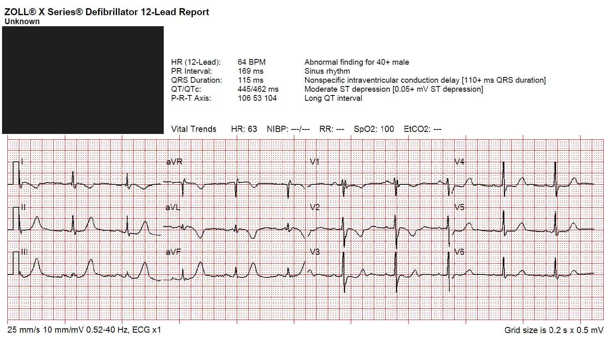
Smith: Có sóng T tối cấp (hyperacute T waves) ở các chuyển đạo dưới, kèm sóng T tối cấp đảo ngược soi gương ở aVL. Có sóng T âm ở V2, gợi ý OMI thành sau, và ST chênh xuống rất ít ở V3 với sóng T dạng xuống-lên (down-up) — tự thân dấu hiệu này gần như đủ để chẩn đoán OMI thành sau.
Nếu bệnh nhân này giờ đã hết đau sau cơn đau ngực, tôi có thể nghĩ sóng T ở aVL là sóng T tái tưới máu (reperfusion T wave), kèm sóng T lớn soi gương ở các chuyển đạo dưới. Và hình ảnh ở V3 cũng có thể là do tái tưới máu sớm thành sau. Ngoài ra, tổn thương bên cao kèm thành sau là một hội chứng của tắc động mạch mũ. Tuy nhiên, bệnh nhân này đang đau ngực tiến triển, vì vậy đây là OMI thành dưới-sau.
Đây là kết quả đọc của Queen. Đây là Phiên bản 1, không phân biệt OMI đang diễn ra với OMI đã tái tưới máu. Phiên bản 2 sẽ chỉ báo “OMI” nếu OMI đang diễn ra.

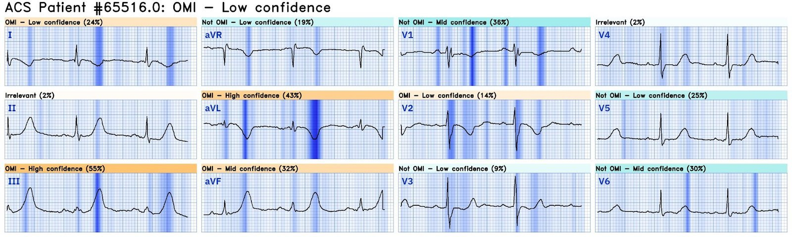
Bấm vào đây để đăng ký truy cập Queen of Hearts
Pendell: Điện tâm đồ cho thấy các đặc điểm chẩn đoán OMI thành dưới-sau, với sóng T tối cấp rất lớn ở các chuyển đạo dưới và sóng T tối cấp âm soi gương tương ứng ở I và aVL. Có ST chênh xuống (STD) không tương xứng, tối đa ở V2-V4, của OMI thành sau. Tôi thấy thật bất thường khi QOH V1 chỉ có độ tin cậy thấp, nhưng ít ra nó vẫn đúng.
Đáng tiếc là bạn có thể thấy thuật toán Zoll thông thường không phát hiện gì, thậm chí không gợi ý nhồi máu cơ tim cấp (AMI), càng không nói đến STEMI.
Trong lúc EMS vận chuyển, cơn đau đột ngột hết.
EMS2 lúc 0210, đã hết đau:

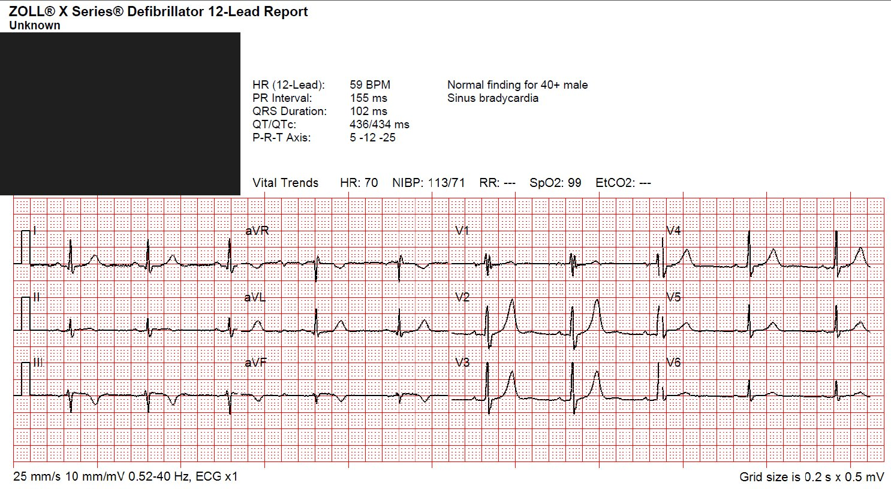

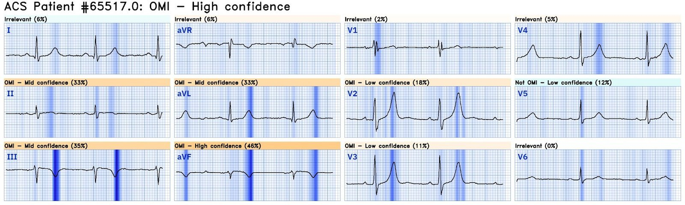
Smith: Lưu ý rằng Phiên bản 1 chẩn đoán “OMI” dù đây là OMI đã tái tưới máu (và nó biết điều đó)
Bấm vào đây để đăng ký truy cập Queen of Hearts
ED1 lúc 0249, đau tiến triển trở lại:

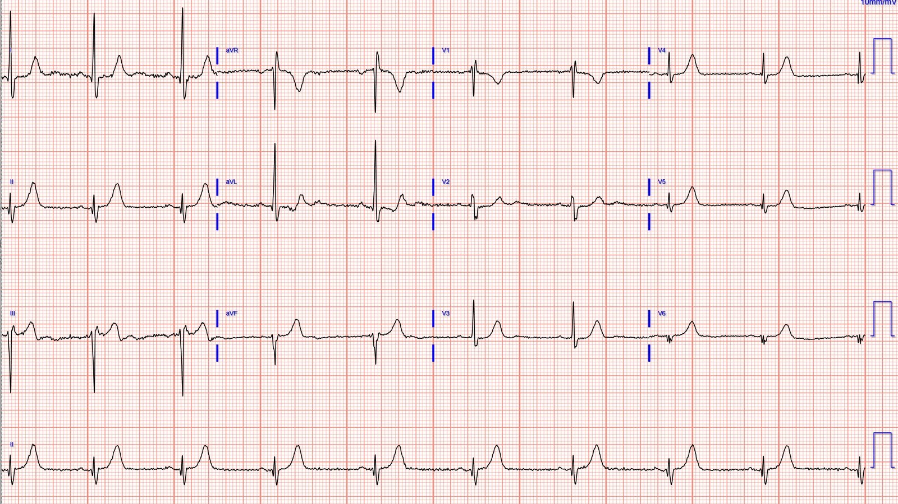
Bạn nghĩ gì?
Smith: Có giả bình thường hóa (pseudonormalization) sóng T ở các chuyển đạo dưới (chúng không bình thường, nhưng đã dương trở lại do tắc lại)
Điều này đã không được nhận ra, vì nó trông “bình thường” so với các điện tâm đồ trước đó.
Và kết quả đọc của Queen:

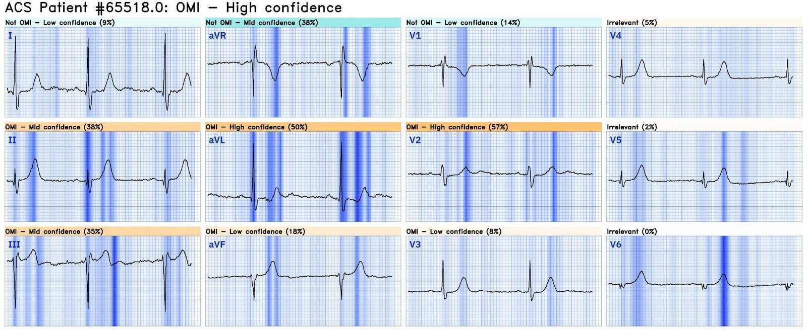
Bấm vào đây để đăng ký truy cập Queen of Hearts
Troponin T độ nhạy cao (hs troponin T) ban đầu: 67 ng/L (giới hạn trên tham chiếu (URL) ở nam là 20 ng/L)
ED2 lúc 0336:

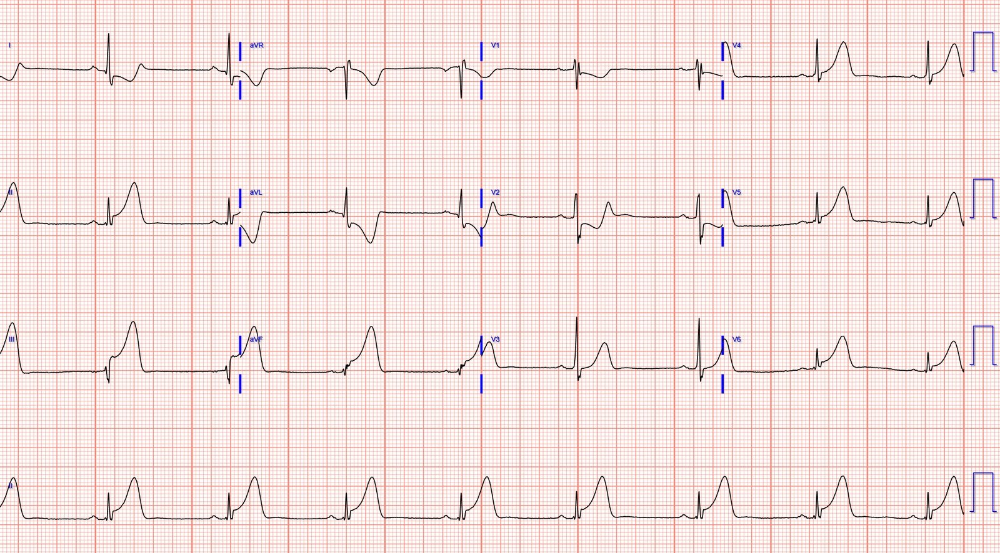
Bản ghi này không cần mô tả

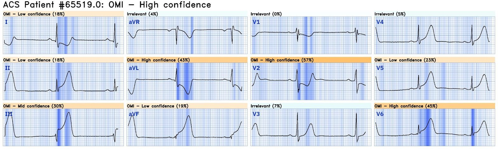
Lúc này bệnh nhân mới được nhận ra là tắc động mạch vành cấp (vì các nhân viên y tế dùng tiêu chuẩn STEMI để chẩn đoán, và đã không nhận ra bằng chứng chẩn đoán trên các điện tâm đồ trước đó).
Chụp mạch vành cho thấy không có bệnh lý đáng kể ở thân chung động mạch vành trái, LAD hay LCX, nhưng có tổn thương thủ phạm cấp ở RCA đoạn gần với “hẹp 99%” và dòng chảy TIMI 2.

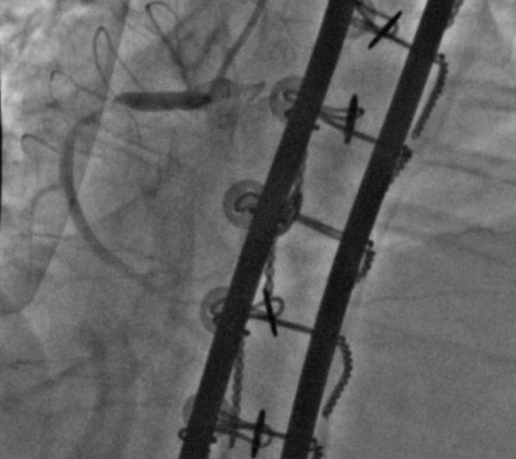
Sau PCI, dòng chảy TIMI 3 được khôi phục:

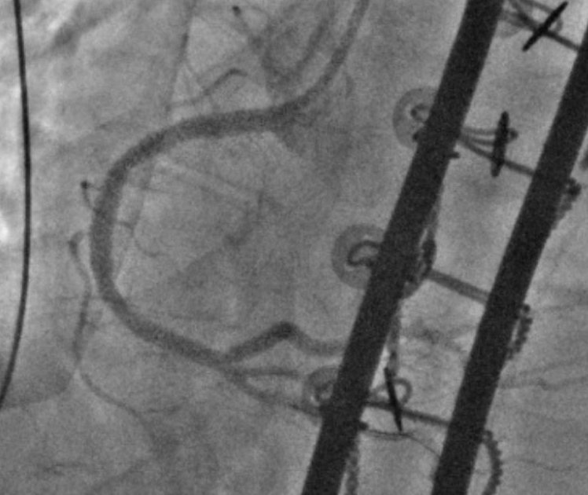
Các lần đo troponin tiếp theo:
1,028 ng/L
6,363 ng/L
(không đo thêm)
Đây là điện tâm đồ duy nhất được ghi sau thủ thuật, khoảng 6 giờ sau thông tim:

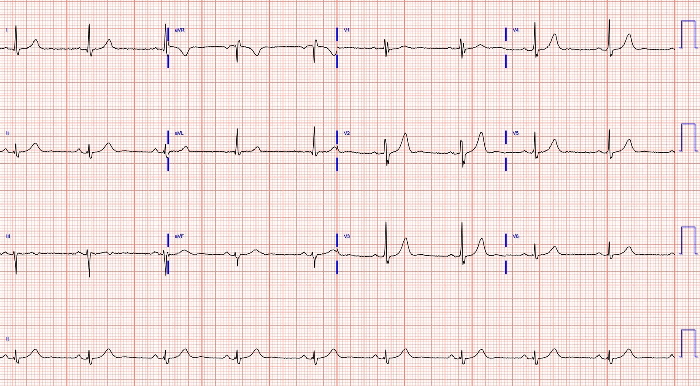
Siêu âm tim ngày hôm sau cho thấy EF 60%, giảm động cơ tim vùng dưới đoạn đáy-giữa và vùng dưới-bên đoạn đáy-giữa.
Bấm vào đây để đăng ký truy cập Queen of Hearts

===================================
BÌNH LUẬN CỦA TÔI, bởi KEN GRAUER, MD (10/10/2024):
===================================
Tôi thấy ca hôm nay đặc biệt thú vị vì: i) Sự tương quan tuyệt vời giữa thời điểm ghi các điện tâm đồ liên tiếp với sự hiện diện và mức độ nặng của CP (đau ngực – Chest Pain); và, ii) Sự tương tác sâu sắc giữa OMI thành sau cấp với nhồi máu thất phải (RV MI) cấp qua các giai đoạn tắc cấp — tiếp theo là tái tưới máu tự phát — rồi tắc lại động mạch “thủ phạm”.
- Để cho rõ, ở Hình 1 — tôi đã ghép 3 điện tâm đồ đầu tiên của ca hôm nay, và thêm vào đó hình ảnh nghiệm pháp soi gương (Mirror Test) cho chuyển đạo V2 hoặc V3 trong cả 3 bản ghi. (Để ôn lại cách tôi áp dụng nghiệm pháp soi gương do tôi đề ra — xem Bình luận của tôi trong bài ngày 21 tháng Chín năm 2022 trên Dr. Smith’s ECG Blog).
===============================
SUY NGHĨ CỦA TÔI về điện tâm đồ #1:
Ở một bệnh nhân đau ngực dữ dội, mới khởi phát — điện tâm đồ EMS ban đầu rõ ràng bất thường và gợi ý OMI cấp. Tuy vậy — tôi thấy kiểu bất thường ST-T này khác thường, đến mức tôi đã không chắc ngay được chuyện gì đang xảy ra.
- Điện tâm đồ #1 cho thấy nhịp xoang tần số ~65/phút — khoảng PR bình thường — QTc ở ngưỡng giới hạn — hình ảnh RBBB không hoàn toàn (rSrs’ ở chuyển đạo V1 với sóng s tận ở các chuyển đạo I,V6 — nhưng không có QRS giãn rộng đáng kể) — và không có lớn buồng tim.
- Dấu hiệu nổi bật nhất là sóng T kiểu de Winter (deWinter-like) thấy ở mỗi chuyển đạo dưới. Dù tôi quen thấy toàn bộ dải thay đổi ST-T kiểu de Winter ở các chuyển đạo trước tim hơn nhiều (xem Bình luận của tôi trong bài ngày 17 tháng Tư năm 2023) — tôi không biết mô tả cách nào khác cho hình ảnh điểm J chênh xuống rồi đi lên thành sóng T khổng lồ không tương xứng, ngoài việc coi đó là tương đương kiểu de Winter của thay đổi tối cấp ở bệnh nhân OMI thành dưới cấp này.
- Phù hợp với OMI thành dưới cấp — là các thay đổi ST-T soi gương thấy ở các chuyển đạo bên cao I và aVL.
- Dùng nghiệm pháp soi gương giúp dễ nhận ra OMI thành sau đi kèm (theo hình đảo ngược của chuyển đạo V3 trong điện tâm đồ #1). Phù hợp với OMI thành sau là ST chênh xuống thẳng đuỗn, dốc xuống ở chuyển đạo V4 kế bên, trong khi không có ST chênh xuống ở các chuyển đạo bên V5,V6.
- Dù vậy — ST dạng vòm kèm sóng T đảo ngược đối xứng thấy ở chuyển đạo V1 và V2 của điện tâm đồ #1 lại thiếu hình ảnh ST chênh xuống dạng bậc thềm (shelf-like) thường thấy ở các chuyển đạo này khi có OMI thành sau. Thay vào đó — bức tranh ST-T ở V1,V2 này phù hợp hơn nhiều với nhồi máu thất phải (RV MI) cấp đi kèm. Mức ST chênh xuống tương đối khiêm tốn ở V3,V4 phù hợp với việc ST chênh lên ngược chiều do RV MI cấp đã làm giảm bớt mức ST chênh xuống ở thành trước vốn thường thấy với OMI thành sau.
- Điểm MẤU CHỐT: Cách tốt nhất để xác nhận RV MI cấp — là dùng chuyển đạo bên phải (xem Bình luận của tôi trong các bài ngày 19 tháng Bảy năm 2020 và ngày 11 tháng Bảy năm 2018). Dù vậy — tôi nghĩ kiểu thay đổi trên điện tâm đồ EMS ban đầu này phù hợp nhất với một OMI dưới-sau cấp diện rộng, đang diễn ra — kèm RV MI đi kèm (và có thể sóng T đảo ngược ở V1,V2 cho thấy đã có phần nào tái tưới máu thất phải tự phát).
- ĐIỂM THEN CHỐT (PEARL) #1: Như chúng tôi thường nhấn mạnh — nhận ra RV MI cấp là quan trọng vì: i) Nó khu trú động mạch “thủ phạm” ở RCA đoạn gần; và, ii) Xử trí huyết động của RV MI cấp có thể phụ thuộc thể tích (tức là tránh dùng nitroglycerin (NTG) — truyền dịch khi tụt huyết áp).

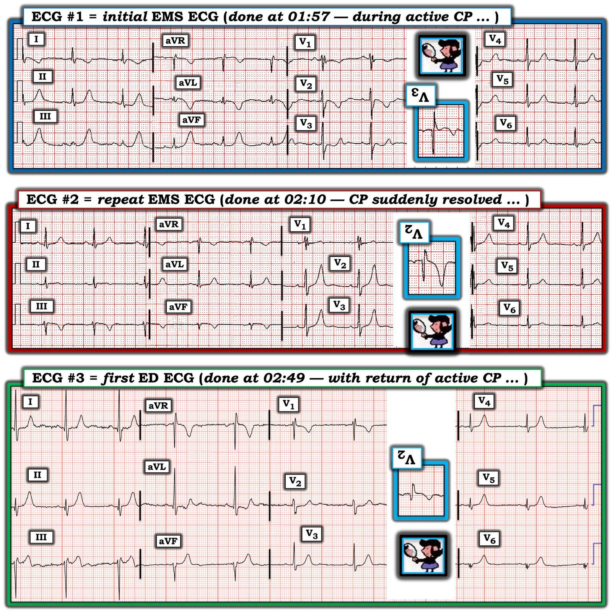
SUY NGHĨ CỦA TÔI về điện tâm đồ #2:
Sự thay đổi hình dạng ST-T từ điện tâm đồ #1 sang điện tâm đồ #2 — thật nổi bật!
- Chỉ trong 13 phút (từ 01:57 đến 02:10) và đồng thời với việc hết đau ngực — các sóng T kiểu de Winter ở các chuyển đạo dưới đã tiến triển thành sóng T đảo ngược của tái tưới máu tự phát.
- Sóng T tái tưới máu giờ cũng thấy ở các chuyển đạo bên cao I và aVL, dưới dạng sóng T dương nổi bật.
- ĐIỂM THEN CHỐT (PEARL) #2: Điện tâm đồ ghi lại này là một ví dụ sâu sắc về sóng T cao, nhọn ở các chuyển đạo V2,V3,V4 báo hiệu tái tưới máu ở chuyển đạo thành sau!
- Hãy chú ý hình đảo ngược theo nghiệm pháp soi gương của chuyển đạo V2 giúp dễ nhận ra sóng T nhọn, dương ở V2,V3 cho thấy tái tưới máu thành sau như thế nào!
- ĐIỂM THEN CHỐT (PEARL) #3: Lưu ý rằng sóng T ở chuyển đạo V1 giờ cũng dương — nhưng biên độ của sóng T dương này ở V1 nhỏ hơn rất nhiều so với biên độ sóng T nhọn ở V2,V3. Đây là một ví dụ khác về việc kích thước sóng T tái tưới máu bị giảm bớt do tương tác giữa OMI thành sau và OMI thất phải.
- ĐIỂM THEN CHỐT (PEARL) #4: Về lâm sàng — sự tương quan nêu trên giữa việc đột ngột hết đau ngực và sự xuất hiện thay đổi sóng T tái tưới máu rõ rệt cho chúng ta biết rằng mạch “thủ phạm” đã tự thông trở lại!
SUY NGHĨ CỦA TÔI về điện tâm đồ #3:
Nắm được các dấu hiệu điện tâm đồ trên 2 bản ghi đầu tiên — giúp dễ hiểu diễn tiến sinh lý bệnh xảy ra 39 phút sau điện tâm đồ #2 — khi đau ngực tiến triển trở lại:
- ĐIỂM THEN CHỐT (PEARL) #5 (Vượt ra ngoài phần cốt lõi): Khi so sánh các điện tâm đồ liên tiếp — nhớ tìm mọi thay đổi về trục mặt phẳng trán và hình dạng QRS. Tôi nghĩ từ khi ghi điện tâm đồ #1 — trục đã dịch dần sang trái (phần âm thực nhiều hơn ở các chuyển đạo dưới) — đến mức hình dạng ở chuyển đạo chi trên điện tâm đồ #3 giờ có lẽ phù hợp với LAHB (blốc phân nhánh trái trước – Left Anterior HemiBlock). Thay vì LVH — biên độ sóng R tăng ở I và aVL có thể phản ánh sự lệch pha về thời điểm khử cực thất do blốc phân nhánh.
- ĐIỂM THEN CHỐT (PEARL) #6: Dù vậy — thay đổi ST-T ở chuyển đạo chi trên điện tâm đồ #3 có vẻ đang trong quá trình quay về như những gì chúng ta thấy lần đầu ở điện tâm đồ #1. Về lâm sàng — việc quay về các dấu hiệu của điện tâm đồ EMS ban đầu cùng với việc đau ngực tiến triển trở lại — gợi ý tắc lại động mạch “thủ phạm”. Nhận thức được tình trạng tái tưới máu tự phát này — rồi tắc lại ngay sau đó — nhấn mạnh sự cần thiết phải thông tim kèm PCI kịp thời ngay khi có thể!
===============================
T.B. (P.S.): Với những ai quan tâm đến một ca khác minh họa sự tương tác hấp dẫn giữa các lực điện ngược chiều, như có thể xảy ra khi RV MI cấp và nhồi máu thành sau tiến triển với nhịp độ khác nhau — hãy xem Bình luận của tôi trong bài ngày 7 tháng Mười năm 2019.